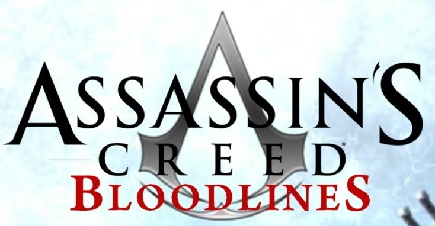

TITOLO: Assassin's Creed: Bloodlines
SVILUPPO: Ubisoft Montreal
DATA DI USCITA: 17 novembre 2009 (PSP)
COLLOCAMENTO STORICO: Medioevo, Terza Crociata
TRAMA:
È trascorso un mese da quando Altair ha ucciso Al Mualim, Maestro degli Assassini. Divenuto di fatto il nuovo capo spirituale degli Assassini, Altair scopre che i Templari sopravvissuti si sono ritirati sull'isola di Cipro, dopo che Re Riccardo ha fatto imprigionare l'imperatore Isacco Comneno e venduto l'isola ai Templari, che ora sono sotto la guida di Armand Bouchart, nuovo Gran Maestro dell'ordine.
Dopo essersi introdotto ad Acri ed aver catturato Maria, la donna Templare che aveva risparmiato a Gerusalemme, Altair salpa assieme a lei alla volta dell'isola, approdando nella città di Limassol; qui trova l'appoggio di Alessandro, uno dei capi della resistenza cipriota che si oppone all'occupazione templare, e con il suo aiuto inizia ad indagare in merito ad un misterioso archivio di cui i Templari sarebbero in possesso e che potrebbe avere qualcosa a che fare con il Frutto dell'Eden ora in mano agli Assassini.
A Limassol, Altair si confronta con Federico "Il Rosso", addestratore delle reclute crociate, uccidendolo nella sua fortezza, poi lui e Maria, che a causa di passati screzi con Armand Bouchart e della sua presunta complicità con Altair è stata accusata di essere a sua volta un'Assassina, si rimettono in viaggio alla volta di Kyrenia sulle tracce del Gran Maestro.
Una volta arrivati a destinazione però i due si trovano a dover affrontare i fanatici religiosi al servizio di Moloch, detto "Il Toro", che pur non essendo un Templare collabora con loro al fine di mantenere il proprio potere spirituale sull'isola.
Altair si introduce nel castello di Kantara dove risiede Moloch e riesce ad ucciderlo dopo un duro combattimento, ma al suo ritorno scopre da Marko, un membro della resistenza, che il rifugio è stato attaccato e che tutti, compresa Maria, sono stati arrestati.
Grazie all'aiuto di Marko e di altri cittadini alleati, Altair libera i membri della resistenza, i quali gli dicono che Maria è stata presa da Shalim, il figlio di Moloch, e portata nella fortezza di Buffavento, dove oltretutto è imprigionato l'Oracolo Oscuro, una misteriosa donna che pare in grado di prevedere il futuro.
Sia per salvare Maria sia per uccidere il suo bersaglio, Altair si introduce a Buffavento, dove, origliando una discussione tra Armand Bouchart e Shalim, viene a sapere che Maria è riuscita a liberarsi e a fuggire. In seguito si confronta con l'Oracolo Oscuro, un tempo ricca nobildonna cipriota ma divenuta ora, per qualche oscuro motivo, una pazza esaltata, uccidendola nelle segrete del palazzo.
Abbandonata la fortezza, Altair scopre che Barnaba, il presunto capo della resistenza cipriota lì a Kyrenia, era in realtà un Templare, addirittura il vice di Bouchart, che dopo aver ucciso il vero Barnaba si era sostituito a lui. Non potendo più contare sull'appoggio della resistenza, Altair decide di uccidere Shalim, e cercandolo al porto si imbatte in Maria, che fingendosi una odalisca di alto bordo riesce a entrare con una portantina fin al suo palazzo.
Altair la segue, e Maria, arrivata al cospetto di Shalim, apprende da lui che tutto ciò per cui lei aveva sempre combattuto era una menzogna, e che i Templari agiscono unicamente nel proprio interesse piuttosto che in quello dell'umanità. Intromessosi nella discussione Altair deve affrontare contemporaneamente Shalim e suo fratello gemello Shahar, ma nella furia dello scontro perde nuovamente di vista Maria.
Con la morte di Shalim e Shahar, Kyrenia viene definitivamente liberata, pertanto Altair fa nuovamente ritorno a Limassol per chiudere i conti una volta per sempre con Armand Bouchart, ma rientrato in città scopre che il Templare ha fatto ricadere su di lui la colpa di alcuni efferati omicidi, mettendogli contro la popolazione.
Davanti all'ingresso del castello si confronta con il vice templare Barnaba, che precedentemente aveva ucciso Alessandro, tenta di sopraffarlo lanciandogli contro una folla inferocita, ma Altair si difende usando il Frutto dell'Eden e convincendo in questo modo gli abitanti della città a ribellarsi ai Templari.
Barnaba viene successivamente ucciso da Maria, che rivela ad Altair l'ubicazione del fantomatico archivio, una sorta di immensa biblioteca situata al di sotto del castello.
Al livello più basso i due incontrano Armand Bouchart, che rivela loro il vero piano dei Templari: l'archivio altro non è che il risultato di anni di ricerche condotte dall'Ordine in merito ai manufatti leggendari, come il Frutto dell'Eden, ma con la comparsa di Altair, si era capito che quelle conoscenze potevano essere in pericolo se lasciate a Cipro, pertanto Bouchart ne aveva ordinato l'immediato trasferimento in un'altra locazione.
Sconfitta Maria, Armand si confronta con Altair, e dopo una difficile battaglia l'Assassino ha la meglio.
Altair e Maria riescono ad abbandonare il castello prima del crollo, e una volta all'esterno discutono sul loro futuro: entrambi decidono di compiere insieme un viaggio attorno al mondo, alla ricerca rispettivamente della conoscenza e della libertà, e Altair decide di non distruggere il Frutto dell'Eden, com'era nei suoi piani, volendo invece comprenderne interamente la natura. Una scelta che inevitabilmente avrà delle conseguenze.